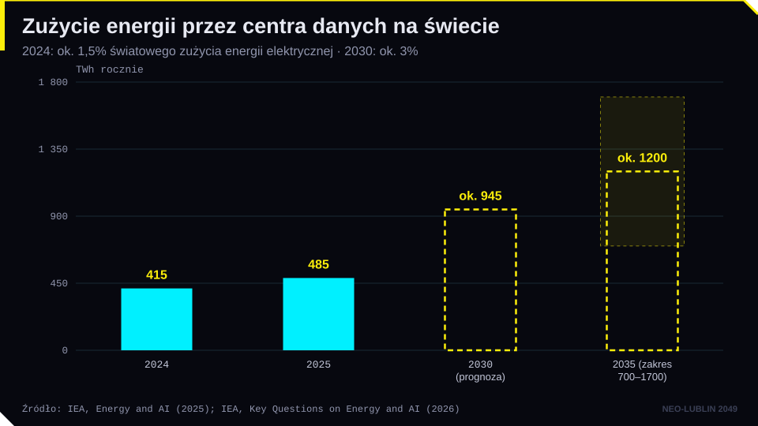
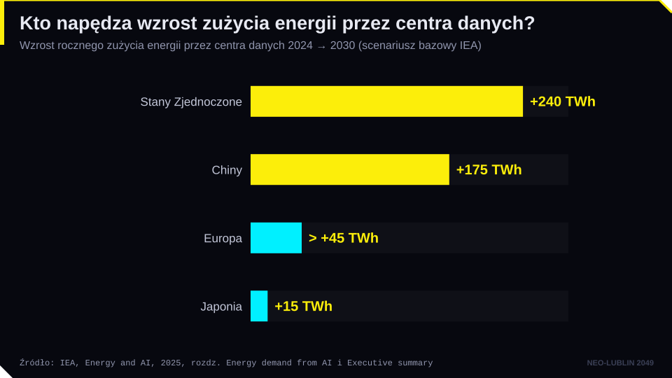
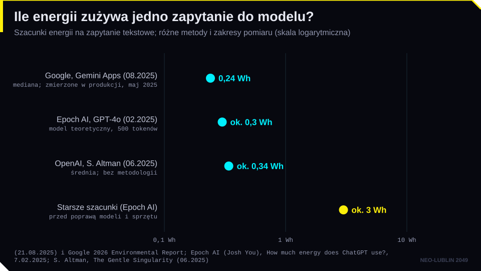
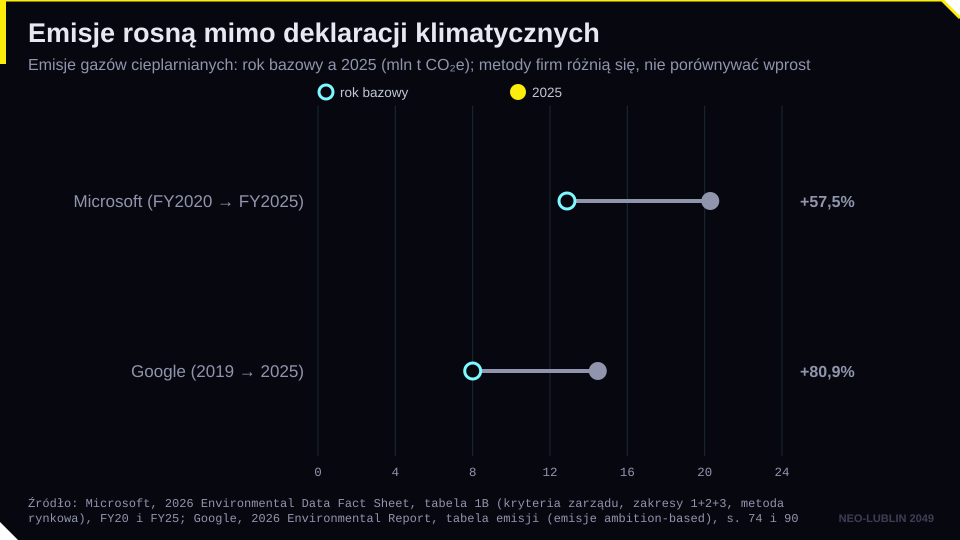
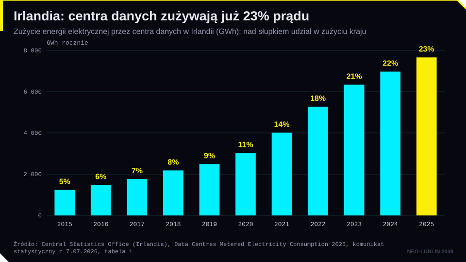
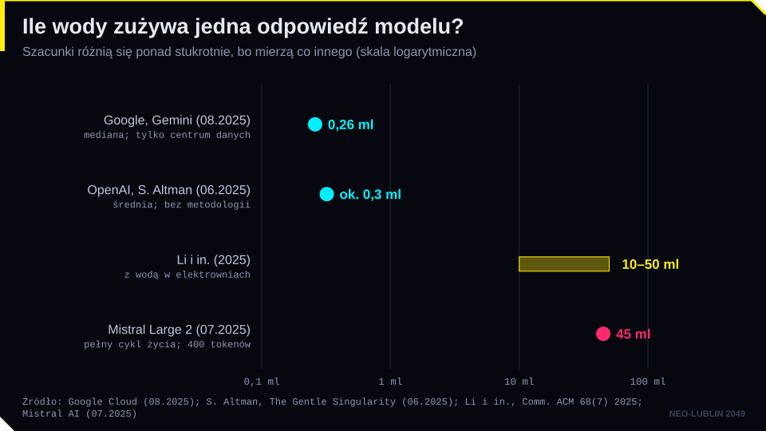
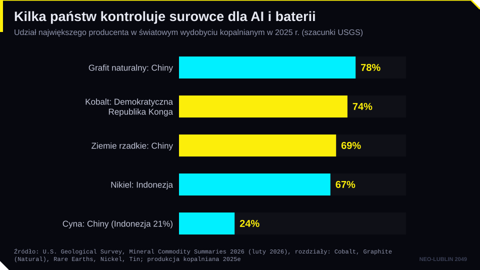

książka
Atlas sztucznej inteligencji. Władza, pieniądze i środowisko naturalne
Książka, z której pochodzi „logika ekstrakcji”. Rozdziały o ziemi, pracy i danych.
Dziennik · dzielnica 10 / 10 · spotkanie VIII
Wrotków: Doki nad Bystrzycą
W dokach kończy się łańcuch dostaw: kobalt, woda, energia i złom. Zlecenie: policz koszty i zamknij śledztwo.
piątek 22.01.2027, 12:45–14:15 (spotkanie VIII) · Aula WPiA UMCS
Strzałki lub spacja przewijają slajdy, klawisz F włącza pełny ekran.
Cel modułu. Po zajęciach student potrafi: opisać ślad energetyczny i wodny AI, posługując się aktualnymi danymi i rozumiejąc, skąd biorą się rozbieżności szacunków; wyjaśnić, jak łańcuchy dostaw surowców (kobalt, cyna, lit, metale ziem rzadkich) łączą AI z prawami człowieka i geopolityką; zrelacjonować koncepcję „logiki ekstrakcji” K. Crawford; wskazać przepisy UE dotyczące raportowania wpływu środowiskowego centrów danych i modeli AI oraz należytej staranności w łańcuchach dostaw; powiązać najważniejsze wątki całego kursu i przygotować się do zaliczenia.
Pytanie przewodnie. Kto płaci za „chmurę”, skoro nie widać jej rachunku?
Każda technologia informacyjna ma ciało. W XIX w. był nim telegraf, a kable podmorskie izolowano gutaperką, lateksem z drzewa Palaquium gutta, rosnącego na Półwyspie Malajskim. Według Kate Crawford (za J. Tullym) pierwszy kabel transatlantycki z 1857 r. miał około 1800 mil długości (ok. 2900 km), ważył 2000 ton i wymagał około 250 ton gutaperki. Jedno dorosłe drzewo dawało około 300 g lateksu, więc na jeden kabel trzeba było ściąć setki tysięcy drzew. Crawford podaje, że „na jedną tonę” potrzeba było około 900 tys. pni; z prostego rachunku wynika jednak, że to raczej rząd wielkości dla całego kabla. To dobra lekcja krytycznego czytania liczb, także w renomowanych książkach.
Pracowali przy tym nisko opłacani robotnicy malajscy, chińscy i dajaccy. Lateks przetwarzano i sprzedawano przez Singapur na rynek brytyjski. W latach 80. XIX w. gatunek był niemal wymarły. Zakaz pozyskiwania lateksu z 1883 r. przyszedł za późno. Wiktoriańska katastrofa gutaperki pokazuje związek technologii z materiałami, środowiskiem i warunkami pracy. Dziś tę rolę odgrywa górnictwo metali potrzebnych do produkcji chipów i baterii.
Metafora „chmury” ukrywa fabryki: hale z serwerami, systemy chłodzenia i linie wysokiego napięcia. Według raportu Międzynarodowej Agencji Energetycznej Energy and AI (kwiecień 2025 r.) centra danych zużyły w 2024 r. około 415 TWh energii elektrycznej, czyli około 1,5% światowego zużycia. Od 2017 r. zużycie rosło o około 12% rocznie. W raporcie Key Questions on Energy and AI (kwiecień 2026 r.) IEA podała, że w 2025 r. zużycie wzrosło o 17%, do około 485 TWh, a zużycie centrów danych nastawionych na AI o około 50%. Prognoza na 2030 r. to około 945–950 TWh, czyli około 3% światowego zużycia i nieco więcej niż dzisiejsze zużycie Japonii. Na 2035 r. scenariusz bazowy zakłada około 1200 TWh, przy rozpiętości scenariuszy od 700 do 1700 TWh.


Popyt jest skupiony geograficznie. W 2024 r. USA odpowiadały za 45% zużycia centrów danych, Chiny za 25%, Europa za 15%. Do 2030 r. USA i Chiny dadzą łącznie około 80% wzrostu, a w USA centra danych to prawie połowa wzrostu zapotrzebowania na energię. Na mieszkańca centra danych w USA zużywają około 540 kWh rocznie, w Afryce poniżej 1 kWh. Wąskim gardłem stają się przyłącza do sieci, turbiny gazowe, transformatory i sprzeciw lokalnych społeczności.
Jedno zapytanie zużywa niewiele. Google (sierpień 2025 r.) podał medianę 0,24 Wh dla zapytania tekstowego do Gemini, Epoch AI oszacowało około 0,3 Wh dla zapytania do GPT-4o, a Sam Altman podał 0,34 Wh, bez metodologii. Problem to skala: miliardy zapytań dziennie, coraz dłuższe odpowiedzi modeli „rozumujących” i kosztowne trenowanie kolejnych modeli. W styczniu 2024 r. w Davos Altman przyznał, że rozwój AI wymaga przełomu energetycznego, np. fuzji jądrowej. Firmy technologiczne podpisują umowy na energię jądrową: Microsoft na ponowne uruchomienie bloku elektrowni Three Mile Island (835 MW, 20 lat), Google z Kairos Power na małe reaktory modułowe, Amazon z X-energy, Meta na energię z elektrowni Clinton. Mark Zuckerberg mówił w 2024 r., że nowe centra danych mają 50–150 MW, a centrum o mocy 1 GW to wielkość elektrowni jądrowej przeznaczonej tylko do trenowania.

Mimo obietnic klimatycznych emisje rosną. Według raportu Microsoftu z 2025 r. emisje firmy były o 23,4% wyższe niż w 2020 r., a według raportu z 2026 r. (rok obrotowy 2025) już o ok. 57% wyższe, choć celem jest bilans ujemny do 2030 r. Emisje Google według raportu z 2025 r. były o 51% wyższe niż w 2019 r., a raport z 2026 r. pokazał wzrost o 18% w ciągu roku i o ok. 81% wobec 2019 r. Rozbieżność między deklaracjami a wynikami rodzi pytania o greenwashing, czyli nieuczciwe praktyki rynkowe oparte na twierdzeniach środowiskowych.

Działa też paradoks Jevonsa. W 1865 r. W. S. Jevons zauważył, że sprawniejsze maszyny parowe zwiększyły zużycie węgla, bo stały się tańsze w użyciu. Gdy w styczniu 2025 r. chiński DeepSeek pokazał tańszy i sprawniejszy model, Satya Nadella skomentował to słowami: „Paradoks Jevonsa znów uderza!”. Efektywność jednego zapytania nie gwarantuje mniejszego zużycia łącznie.
Skalę lokalną dobrze pokazuje Irlandia, jedno z głównych centrów chmury w Europie. Według irlandzkiego urzędu statystycznego (CSO) centra danych zużyły w 2025 r. 7663 GWh, czyli 23% energii elektrycznej kraju, wobec 5% w 2015 r.

Centra danych zużywają wodę na trzy sposoby: do chłodzenia serwerów (często przez odparowanie), pośrednio w elektrowniach i przy produkcji półprzewodników, która wymaga ultraczystej wody. Praca P. Li, J. Yanga, M. A. Islama i S. Rena Making AI Less „Thirsty” (arXiv 2023, wersja opublikowana w „Communications of the ACM” 2025) szacuje, że trenowanie GPT-3 w centrach danych Microsoftu w USA zużyło około 5,4 mln litrów wody, w tym około 700 tys. litrów bezpośrednio w centrum danych. Model zużywa pół litra wody na około 10–50 średniej długości odpowiedzi, zależnie od miejsca i pory. Wcześniejsza wersja pracy podawała „20–50 pytań” i ta liczba krąży w mediach. Według prognozy autorów w 2027 r. AI może odpowiadać za pobór 4,2–6,6 mld m³ wody, więcej niż roczny pobór 4–6 krajów wielkości Danii albo połowa poboru Wielkiej Brytanii.
Szacunki dla jednej odpowiedzi różnią się ponad stukrotnie: Google podaje 0,26 ml (mediana, tylko woda w centrum danych), Altman ok. 0,3 ml, Li i in. 10–50 ml (z wodą w elektrowniach), a Mistral, który zlecił analizę cyklu życia według metodyki francuskiej agencji ADEME, 45 ml dla odpowiedzi o długości 400 tokenów (z produkcją sprzętu i trenowaniem). Te liczby nie są sprzeczne: mierzą co innego. Wniosek prawny jest prosty: bez wspólnej metodologii raportowania liczby są nieporównywalne, a firmy mogą wybierać tę, która wygląda najlepiej.
Woda jest zasobem lokalnym. W Urugwaju w 2023 r., w czasie najgorszej suszy od 74 lat, Google planował centrum danych zużywające do 7,6 mln litrów wody pitnej dziennie; po protestach projekt zmieniono na chłodzenie powietrzem. W Aragonii planowane centra danych Amazona otrzymały pozwolenia na około 756 tys. m³ wody rocznie, a w Hiszpanii powstał ruch „Tu Nube Seca Mi Río” („Twoja chmura wysusza moją rzekę”). Prawnik zapyta o ocenę oddziaływania na środowisko, udział społeczeństwa w postępowaniu i priorytety korzystania z wód w czasie suszy.

Lit jest podstawą baterii litowo-jonowych, także w magazynach energii dla centrów danych. W Portugalii projekt kopalni Barroso uzyskał status projektu strategicznego UE. W listopadzie 2023 r. premier António Costa podał się do dymisji w związku ze śledztwem dotyczącym koncesji na wydobycie litu, projektu wodorowego i centrum danych w Sines. Od grudnia 2024 r. jest przewodniczącym Rady Europejskiej.
Cyna jest m.in. składnikiem lutów w każdym urządzeniu elektronicznym. Indonezja to drugi producent cyny na świecie po Chinach (61 tys. ton w 2025 r.), a około 90% indonezyjskiej cyny pochodzi z wysp Bangka i Belitung. Wydobycie odbywa się częściowo w szarej strefie: górnicy na prowizorycznych pontonach zasysają piasek z dna morskiego, a pośrednicy mieszają tę cynę z cyną z legalnych kopalń. Śledztwa dziennikarskie z 2012 r. powiązały cynę z Bangki z łańcuchami dostaw największych producentów elektroniki. Afera w państwowej spółce PT Timah, w której szkody (także środowiskowe) oszacowano na 300 bln rupii, zakończyła się m.in. wyrokiem 20 lat pozbawienia wolności dla jednego z oskarżonych.
Kobalt pochodzi w około 74% z Demokratycznej Republiki Konga (USGS, szacunek za 2025 r.). Siddharth Kara (Krwawy kobalt, wyd. pol. 2024) opisuje kopalnie rzemieślnicze, pracę dzieci i warunki bliskie niewolnictwu. Na wschodzie kraju trwa wojna: w styczniu 2025 r. rebelianci z M23 zajęli Gomę, a dochody z koltanu i cyny finansują konflikt. W 2025 r. DRK wprowadziła zakaz eksportu kobaltu, a potem kwoty eksportowe. Metale ziem rzadkich wydobywają głównie Chiny (około 70%), które w 2025 r. ograniczyły ich eksport. Surowce są więc także narzędziem polityki zagranicznej.

Kate Crawford w Atlasie sztucznej inteligencji (2021, wyd. pol. 2024) pokazuje AI jako przemysł wydobywczy. „Logika ekstrakcji” oznacza, że współczesne technologie eksploatują na ogromną skalę zasoby naturalne, ludzką pracę i dane, a koszty etyczne i społeczne zostają poza rachunkiem. Te trzy ekstrakcje łączą wątki całego kursu: ziemia (energia, woda, metale, to spotkanie), praca (oznaczanie danych, moderacja treści, spotkania 4 i 5) i dane (teksty, obrazy i głosy użytkowników i twórców, spotkania 7 i 8).
Koszty i korzyści rozkładają się nierówno. Korzyści trafiają głównie do państw i firm z globalnej Północy, a koszty środowiskowe częściej do Południa. Łańcuch dostaw jest tak rozległy, że trudno go prześledzić. Według notatek do wykładu nawet duże koncerny przez lata badały tylko huty, a nie kopalnie, choć to w kopalniach dochodzi do krzywdy ludzi.
AI może też pomagać środowisku. W 2016 r. DeepMind ograniczył zużycie energii na chłodzenie centrów danych Google nawet o 40%. W 2023 r. Google i American Airlines zmniejszyły liczbę smug kondensacyjnych w lotach testowych o 54%. Model GraphCast (2023) przygotowuje 10-dniową prognozę pogody w niecałą minutę i w 90% miar jest lepszy od systemu referencyjnego. System Flood Hub prognozuje powodzie w ponad 80 krajach. Pytanie, czy korzyści równoważą koszty, pozostaje otwarte, bo nikt nie prowadzi takiego rachunku według wspólnej metody.
Raportowanie w UE. Dyrektywa (UE) 2023/1791 o efektywności energetycznej (art. 12 i zał. VII) zobowiązuje operatorów centrów danych o mocy co najmniej 500 kW do publikowania danych o zużyciu energii i wody. Rozporządzenie delegowane Komisji (UE) 2024/1364 ustanowiło system oceny centrów danych; raporty składa się do 15 maja każdego roku. We wrześniu 2026 r. Komisja zaproponowała etykiety A–G dla efektywności energetycznej i wodnej. W czerwcu 2026 r. Komisja przedstawiła też projekt aktu o rozwoju chmury i AI (Cloud and AI Development Act), który ma zwiększyć liczbę centrów danych w UE przy zachowaniu kryteriów zrównoważenia.
AI Act zawiera obowiązki środowiskowe głównie miękkie. Dostawcy modeli GPAI muszą w dokumentacji technicznej podać znane lub szacowane zużycie energii modelu (art. 53 ust. 1 lit. a w zw. z zał. XI pkt 2 lit. e). Normy zharmonizowane mają dotyczyć także efektywności energetycznej (art. 40 ust. 2), dobrowolne kodeksy postępowania mogą obejmować zrównoważenie środowiskowe (art. 95 ust. 2 lit. b), a Komisja do 2 sierpnia 2028 r. oceni postępy normalizacji energooszczędnych modeli (art. 112 ust. 6).
Łańcuchy dostaw. Rozporządzenie (UE) 2017/821 o minerałach z regionów konfliktów nakłada od 2021 r. obowiązki należytej staranności na importerów cyny, tantalu, wolframu i złota, ale nie obejmuje kobaltu. Rozporządzenie (UE) 2023/1542 o bateriach przewiduje należytą staranność dla kobaltu, litu, niklu i grafitu naturalnego, ale jej stosowanie przesunięto na 18 sierpnia 2027 r. Akt w sprawie surowców krytycznych (rozporządzenie (UE) 2024/1252) wyznacza cele na 2030 r. (10% wydobycia, 40% przetwarzania i 25% recyklingu w UE, nie więcej niż 65% z jednego państwa trzeciego). Pakiet Omnibus I (dyrektywa (UE) 2026/470) zawęził zakres dyrektyw o sprawozdawczości zrównoważonego rozwoju (CSRD) i o należytej staranności (CSDDD) do największych przedsiębiorstw. W USA sekcja 1502 ustawy Dodda-Franka (2010) wprowadziła ujawnianie minerałów z regionów konfliktów, a projekt ustawy o wpływie AI na środowisko z 2024 r. nie został uchwalony.
Kurs prowadzi do trzech wniosków. Po pierwsze, AI jest technologią materialną i społeczną, a nie tylko matematyczną: ma koszty, właścicieli i poszkodowanych. Po drugie, prawo reguluje zastosowania i skutki AI, a nie „inteligencję”: posługuje się kategoriami ryzyka, przejrzystości i odpowiedzialności. Po trzecie, prawnik odpowiada za wynik swojej pracy także wtedy, gdy pomagała mu AI: musi weryfikować wyniki, ujawniać korzystanie z narzędzi i chronić dane klientów.
Do zaliczenia warto powtórzyć: definicję systemu AI (art. 3 pkt 1 AI Act i motyw 12), podział na kategorie ryzyka i harmonogram stosowania AI Act po omnibusie cyfrowym (zakazy i art. 4 od 2.02.2025 r., GPAI od 2.08.2025 r., art. 50 od 2.08.2026 r., systemy wysokiego ryzyka z zał. III od 2.12.2027 r., z zał. I od 2.08.2028 r.), ustawę o systemach sztucznej inteligencji i rolę KRiBSI, art. 22 RODO wraz z wyrokami SCHUFA i Dun & Bradstreet Austria, spory o prawa autorskie, dyrektywę o produktach wadliwych oraz omówione studia przypadków.
Test (ścieżka A) składa się z 20 pytań jednokrotnego wyboru i 2 pytań otwartych, razem 30 pkt; do zaliczenia potrzeba 60%, czyli 18 pkt. Pytanie otwarte najlepiej rozwiązywać według schematu: kwalifikacja (czy to system AI, jaka kategoria ryzyka), role (dostawca, podmiot stosujący), przepisy i terminy ich stosowania, inne reżimy prawne (RODO, prawo autorskie, kodeks cywilny, prawo konsumenckie, etyka zawodowa) i własna, uzasadniona ocena. Projekt (ścieżka B) to koncepcja aplikacji opartej na AI, która pomaga prawnikom w konkretnym zadaniu, wraz z planem wdrożenia. Schemat rozwiązywania pytania otwartego przydaje się i tutaj: aplikację trzeba zakwalifikować według AI Act, wskazać role i obowiązki, uwzględnić RODO, tajemnicę zawodową i odpowiedzialność, a potem pokazać ryzyka, nadzór człowieka i etapy wdrożenia. Własna propozycja (ścieżka C) to forma pracy uzgodniona z prowadzącym do 6 listopada 2026 r., z krótkim omówieniem pisemnym; oddaje się ją, tak jak projekt, najpóźniej 18 lutego 2027 r. Projekt i pracę własną oddaje się w sesji z oświadczeniem o korzystaniu z AI; każde przywołane orzeczenie i każdy przepis należy sprawdzić w źródle. Test i oddanie projektu: 5–18 lutego 2027 r., termin poprawkowy do 28 lutego 2027 r.
| Pojęcie | Definicja robocza |
|---|---|
| ślad energetyczny AI | energia zużyta na trenowanie i używanie modeli oraz na produkcję sprzętu |
| ślad wodny AI | woda zużyta do chłodzenia centrów danych, w elektrowniach i przy produkcji chipów |
| pobór a zużycie wody | pobór to woda pobrana ze źródła; zużycie to woda, która do niego nie wraca (np. odparowana) |
| PUE / WUE | wskaźniki efektywności energetycznej i wodnej centrum danych |
| paradoks Jevonsa | wzrost efektywności zwiększa łączne zużycie zasobu, bo obniża koszt jego użycia |
| logika ekstrakcji | według K. Crawford: eksploatacja zasobów naturalnych, pracy i danych na potrzeby AI z pominięciem kosztów społecznych |
| minerały z regionów konfliktów | cyna, tantal, wolfram i złoto, których wydobycie finansuje konflikty zbrojne (rozp. 2017/821) |
| należyta staranność w łańcuchu dostaw | obowiązek identyfikowania i ograniczania ryzyka naruszeń praw człowieka i środowiska u dostawców |
| greenwashing | wprowadzające w błąd twierdzenia o korzyściach środowiskowych produktu lub firmy |
| surowce krytyczne | surowce ważne gospodarczo i zagrożone przerwami w dostawach (rozp. 2024/1252) |
Stan prawny i dane liczbowe sprawdzono: 2026-10-19. Dane IEA: Energy and AI (10.04.2025) i Key Questions on Energy and AI (16.04.2026). Dane o wodzie: Li i in., „Communications of the ACM” 68 (2025), nr 7. Dane o surowcach: USGS, Mineral Commodity Summaries 2026. Dane o emisjach firm pochodzą z ich raportów i relacji prasowych.
książka
Książka, z której pochodzi „logika ekstrakcji”. Rozdziały o ziemi, pracy i danych.
książka
Reportaż z kopalni Konga. Lektura do kazusu o łańcuchu dostaw.
książka
Geopolityka półprzewodników: dlaczego AI zależy od kilku fabryk na świecie.
wideo
Badaczka śladu węglowego modeli o kosztach środowiskowych i o tym, jak je mierzyć.
strona
Raport z danymi o zużyciu energii przez centra danych i prognozą do 2030 r. Źródło wykresów z wykładu.
Polecenie. Zadaj modelowi językowemu trzy pytania:
Co obserwujemy.
Pytania do refleksji.
Stan faktyczny. Spółka „Chmura Lubelska” planuje budowę centrum danych dla modeli AI o mocy 100 MW w gminie pod Lublinem, w zlewni rzeki, w której w ostatnich latach latem występowały niżówki hydrologiczne. Projekt przewiduje chłodzenie wyparne. Spółka ogłasza, że centrum będzie „neutralne klimatycznie”, bo kupi certyfikaty pochodzenia energii ze źródeł odnawialnych. Mieszkańcy obawiają się o dostęp do wody i proponują chłodzenie powietrzem oraz wykorzystanie ciepła odpadowego w miejskiej sieci ciepłowniczej. Spółka twierdzi, że chłodzenie powietrzem zwiększy zużycie energii o kilkanaście procent.
Pytania.
Quiz samosprawdzający. Najlepszy wynik zapisuje się tylko w tej przeglądarce (karta wyników na stronie głównej) i liczy się do aktywności; nic nie jest wysyłane. Pytania z quizu nie pojawiają się na teście zaliczeniowym.
Szacunek energii, wody i emisji CO2 dla liczby i rodzaju zapytań do modelu, z przedziałami niepewności, źródłami (IEA, Li i in., Google, Epoch AI, Mistral) i porównaniami do codziennych czynności.